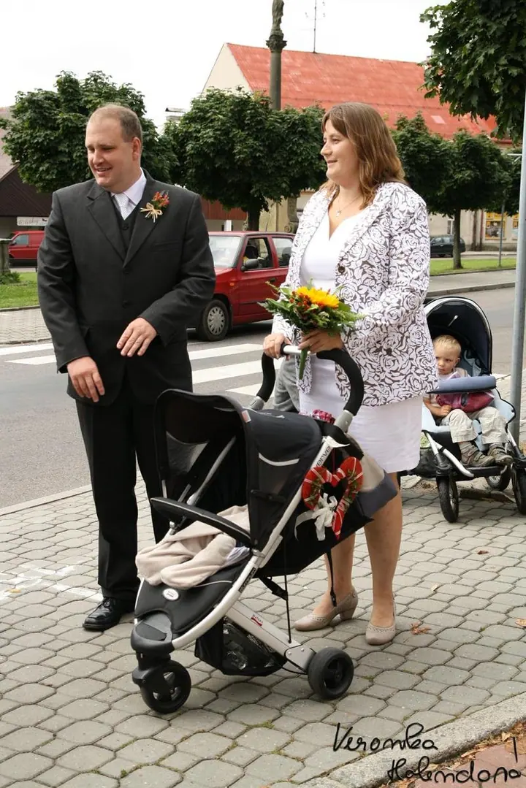
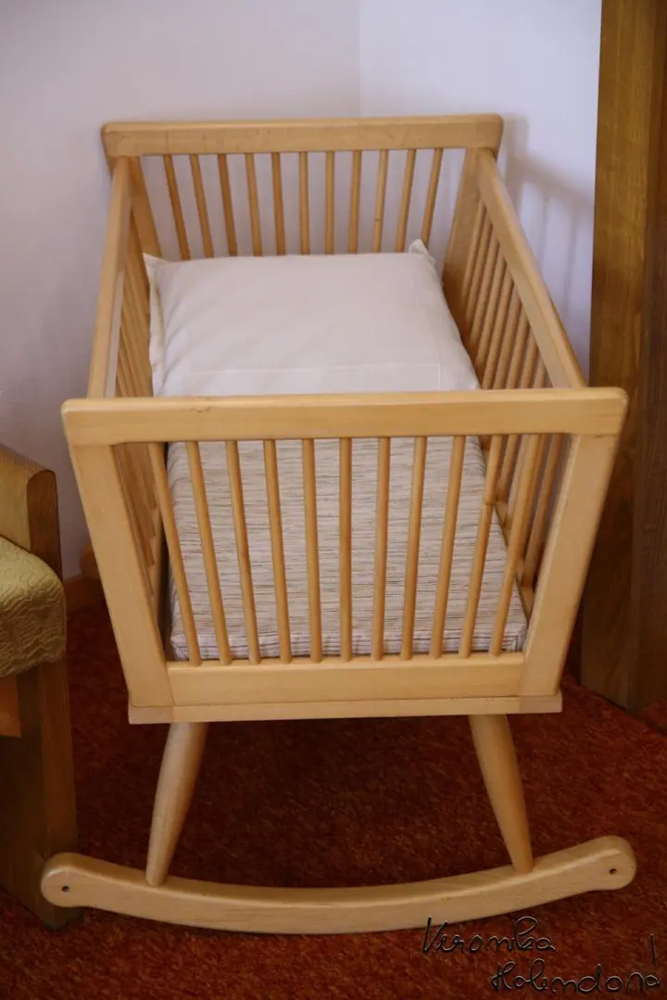
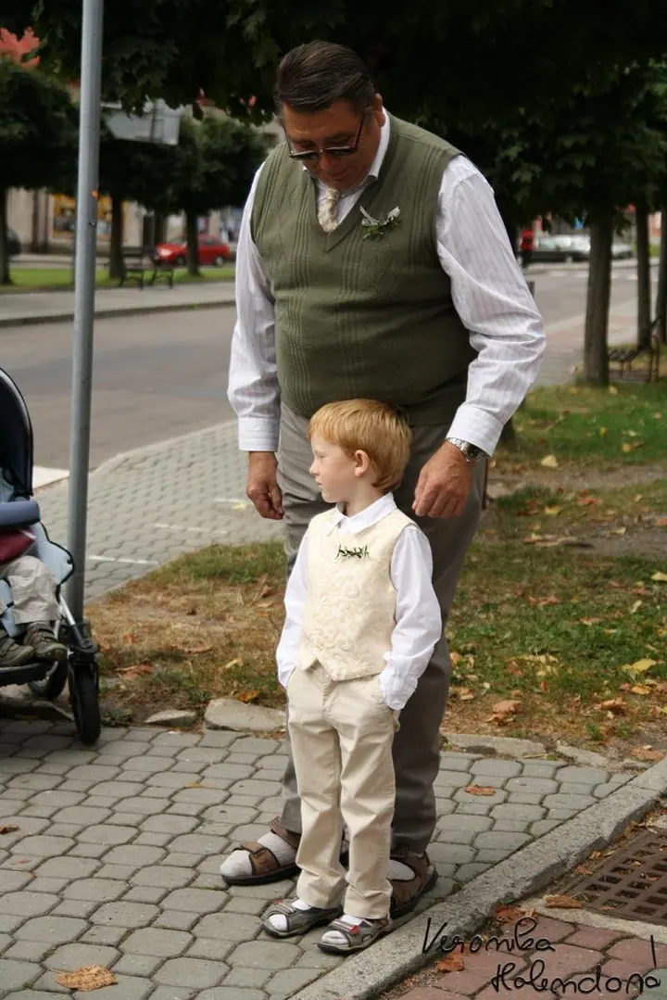
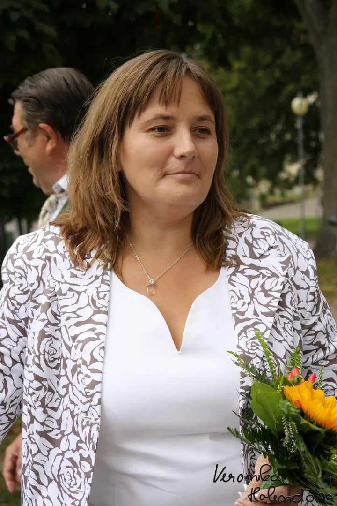
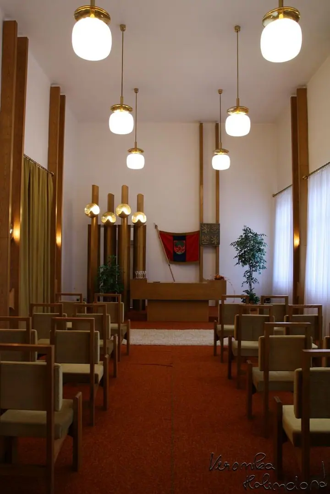
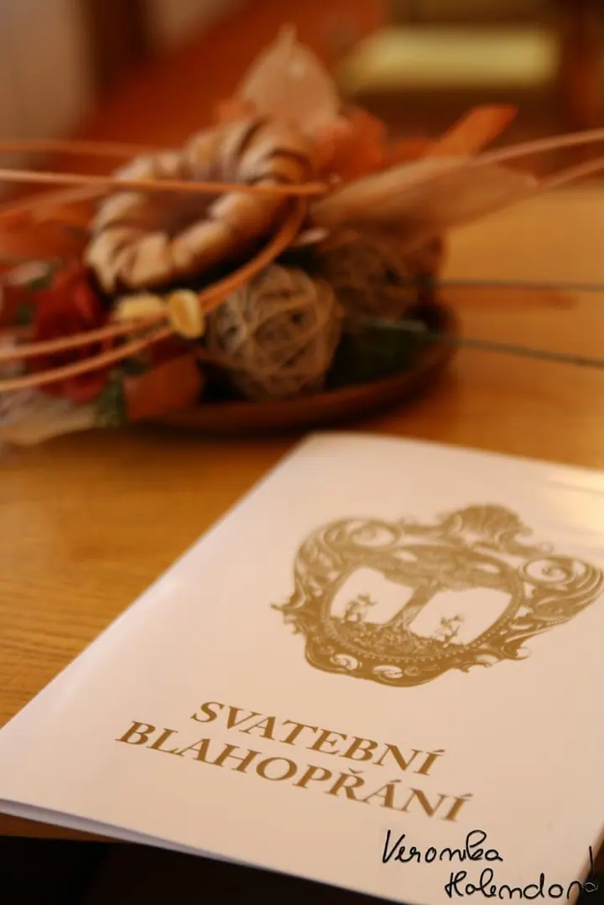

01 / 04
Focení lidí
Ráda fotím lidské modely, venku i uvnitř. Stačí mi napsat a domluvíme se, co a kde budeme fotit.
Zeptat se na termín→







Lidé, zvířata a krajina Orlických hor
Zeptat se na termín →(01) Ahoj
Jmenuji se Veronika Holendová a fotím lidi, zvířata i krajinu kolem Orlických hor. Na tomhle webu sdílím své fotografie a ráda se domluvím i na společném focení.
(02) Co fotím
01 / 04
Ráda fotím lidské modely, venku i uvnitř. Stačí mi napsat a domluvíme se, co a kde budeme fotit.
Zeptat se na termín→Dále nabízím
Fotím psy, koně a další zvířata. Mám ráda, když jsou zvířata v klidu a ve svém prostředí.
↗Fotím přírodu a krajinu kolem Orlických hor, kde to dobře znám.
↗Pokud vás zaujme některá z mých fotografií, napište mi. Bez mého svolení je ale prosím nepoužívejte.
↗(04) Postup
Od první zprávy po hotovou galerii.
Krok 1 z 4
Pošlete mi e-mail, co byste chtěli fotit, nebo o kterou fotografii máte zájem.
Krok 2 z 4
Společně vybereme místo a termín, nejlépe v okolí Orlických hor.
Krok 3 z 4
Fotíme v klidu a bez spěchu, ať jde o lidi, zvířata nebo krajinu.
Krok 4 z 4
Vyberu a upravím ty nejlepší snímky a pošlu vám je.

Fotím to, co mám ráda
(05) Za objektivem
Fotografie jsou pro mě radost a fotím všechno, co mě zaujme. Nejčastěji lidi, psy, koně a přírodu, ale ráda si vyzkouším i něco jiného.
Fotím v blízkém okolí Orlických hor. Pokud jste odsud a chcete se nechat vyfotit, nebo vás zaujala některá z mých fotek, napište mi e-mail. Určitě se domluvíme.
Všechna svá alba průběžně zveřejňuji na Rajčeti, takže si můžete prohlédnout, co jsem v poslední době nafotila.
Veronika
Veronika Holendová · Fotografka lidí, zvířat a krajiny
Hlavně v blízkém okolí Orlických hor. Když jste odsud, rádi se potkáme.
Lidi, zvířata, hlavně psy a koně, krajinu a přírodu. Když máte jiný nápad, napište mi.
Na všechny moje fotografie se vztahují autorská práva. Pokud o nějakou máte zájem, napište mi a domluvíme se.
Fotím z radosti a nejsem profesionální fotografka. Pokud vám to nevadí, neváhejte mě kontaktovat.
(07) Kontakt
Napište pár vět o tom, co si představujete, a termín, který se vám hodí.
veronika.holendova@gmail.com